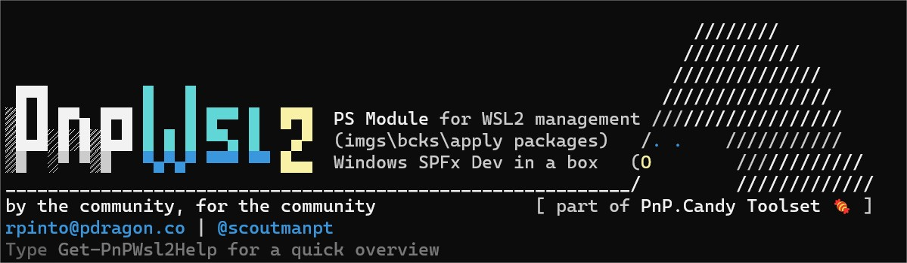

About

Why this module?
I love command line tools, but most of them don't have autocompletion, making us revisit command syntax help over and over again.
I found myself yearning for a more streamlined approach to manage my WSL2 instances effortlessly - from backups and checkpoints to seamlessly injecting new bits into instances. Automation became the name of the game to make the whole process a delightful breeze.
Setting up the SharePoint Framework development toolchain is documented ... but it's still a lot of work to do it manually. And if you are a consultant in multiple clients, multiple tenants, multiple projects is daunting and ... it can be messy.
Plus, I was actually tired of typing the same commands over and over again (call me lazy 🤠 ).
Usage
Currently I'm using PnP.WSL2 on a daily basis: ideal for quickly ramping up a new ready-to-go SharePoint Framework development environment, easily install PowerShell Core environment with already installed PnP.PowerShell , easily install all needed cli : pnpm365 , azure, etc ...
Hey .. you can even add your own !
Cool, hum?
Goals
- Make it easy to manage WSL2 instances.
- Checkpoints, export/import, copy wsl instances, etc.
- Automate WSL2 instances deploying and add extra features to them (like adding SharePoint Framework development environments, git configurations, powershell, python core and bits and other installations inside a linux distribution).
New features and tools to this module will be added periodically, so if you have any suggestions, please let me know!
Have fun, and feel free to contribute to this project!
I hope this is helpful !
Let me know if you have any other questions.
site | email | twitter